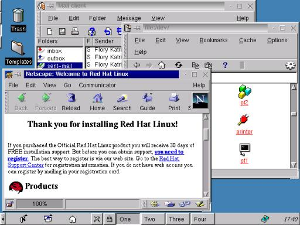

indoglobal.com
| Linux untuk Pemula :: Penggunaan :: Window Manager & Desktop Manager |
|
Hosting by: indoglobal.com |
Saya mengira X Window adalah program yang akan mengatur tampilan atau desktop tapi ternyata X Window hanyalah X server. Jadi bila saat selesai instalasi X, hanya dijumpai layar berwarna abu-abu tanpa window berarti kita belum menjalankan sebuah window manager. Semua tampilan window diatur oleh window manager, yang bisa dijalankan dan di konfigurasi melalui file script startx dan . xinitrc
Window Manager bertugas menyediakan 'Window' bagi aplikasi yang di jalankan. 'Window' yang dimaksud disini adalah exterior dari aplikasi yang dapat berupa border, title bar, system menu, dan behavior-nya. chandy@indo.net.id
Disamping Window Manager kita mengenal pula, Desktop Manager seperti Gnome. Desktop Manager ini lebih berfungsi untuk pengaturan icon di desktop serta menjalankan fungsi drag and drop. Untuk informasi lebih jelas mengenai Window Manager dan Desktop Manager ini ada dapat menghubungi chandy@indo.net.id atau website miliknya, E World di http://chandy.freeshell.org Di sini Anda akan mendapatkan support dalam bahasa Indonesia mengenai Enlightenment (Window Manager) dan Gnome secara lengkap dan jelas.
Banyak sekali Window Manager yang tersediakan untuk Linux dan masing-masing memiliki cara konfigurasi dan instalasi yang berbeda satu dengan yang lain tapi biasanya konfigurasinya bisa diatur melalui file .xinitrc. Window manager yang biasa digunakan untuk Linux diantaranya adalah:
| olwm atau olvwm | OPEN LOOK Windows Manager |
| mwm | Motif Window Manager, kemungkinan ini menjadi window manager versi komersial karena Motif sendiri adalah komersial. |
| twm | sudah disediakan dalam cd RedHat 5.1 |
| fvwm95 | ini termasuk salah satu window manager yang terpopuler, mungkin karena tampilannya mirip Windows95 |
| Afterstep | juga merupakan yang terpopuler dan tersedia di cd RedHat 5.1 |
Sedangkan untuk desktop managernya terdapat:
| KDE | K Desktop Environment, merupakan desktop environment pertama. KDE merupakan desktop environtment yang berbasiskan Qt. Cukup banyak aplikasi yang berbasis KDE |
| GNOME | GNU Network Object Model Environment, merupakan desktop environment berbasiskan GTK. Karena lebih muda dari KDE, aplikasi yang berbasiskan GNOME belum sebanyak KDE tetapi GNOME mendukung theme untuk widget (edit box, check box dsb) sehingga tampilannya lebih bagus/menarik daripada KDE. Untuk informasi lebih lanjut anda bisa mengunjungi situs E World milik chandy@indo.net.id |
Di bawah ini ada screenshot afterstep(yang atas) dan KDE yang sudah saya instalasi di komputer pribadi saya:
Catatan: kumpulan
screenshot
yang sangat menarik dapat Anda lihat di website
E World.

| Linux untuk Pemula :: Penggunaan :: Window Manager & Desktop Manager |
Komentari Halaman Ini (di Window Baru) |